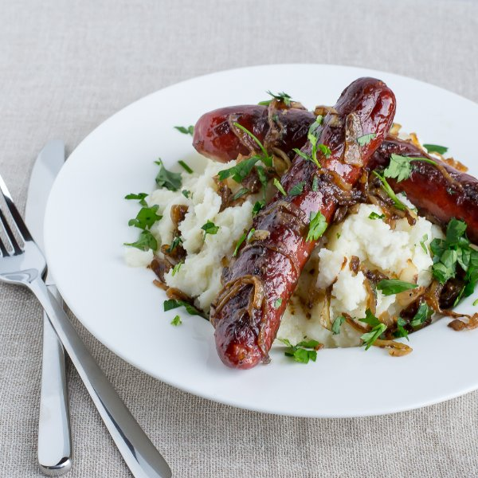

Bangers & Cauliflower Mash with Onion Gravy

Total Time
45 min
Nutrition (Per Serving)
841.6 kcalCalories
43.7 gProtein
23.9 gCarbs
64.7 gFat
Full nutrition table
| Calories | 841.6 kcal |
| Total fat | 64.7 g |
| Saturated fat | 24.6 g |
| Trans fat | 0.7 g |
| Cholesterol | 183.8 mg |
| Sodium | 1483.6 mg |
| Carbohydrates | 23.9 g |
| Fiber | 7.5 g |
| Sugars | 8.2 g |
| Protein | 43.7 g |
| Potassium | 1646.7 mg |
| Calcium | 135.1 mg |
| Iron | 5 mg |
| Vitamin A | 79.5 IU |
| Vitamin C | 167.9 mg |
| Vitamin D | 57.8 IU |
Cookware
Ingredients
- 2 medium headscauliflower
- 8 fl ozchicken or vegetable broth
- 4 clovesgarlic
- 1 small bunchItalian (flat-leaf) parsley
- 8pork sausages
- 2 mediumyellow onions
- black pepper
- butter, unsalted
- cornstarch
- salt
Steps
- Fill a large pot about halfway with water, cover, and bring to a boil.
- Wash cauliflower and cut off the leaves. Separate into small florets and cut the thick stems into smaller pieces. Transfer to a bowl.2 medium heads cauliflower
- Heat a skillet over medium-high heat.
- Add sausages to skillet and cook until browned on all sides, 2-3 minutes. Reduce heat to medium, add water, and continue cooking until cooked (or heated) through, 6-8 minutes. Alternatively, cook according to package directions. Transfer to a plate.8 pork sausages
⅛ cup water - Add cauliflower to boiling water and cook until very tender, 6-7 minutes.
- Thinly slice onions into half rings.2 medium yellow onions
- Once sausages have been transferred, add butter and onions to skillet. Cook, stirring frequently, until onions are softened and caramelized, about 10 minutes.2 tbsp butter, unsalted
- Peel and mince garlic.4 cloves garlic
- Drain cauliflower in a colander, then return to saucepan. Add water, garlic, butter, salt, and pepper. Blend using a hand/immersion blender or a potato masher. Cover and set aside.¼ cup water
2 tbsp butter, unsalted
1 tsp salt
½ tsp black pepper - Sprinkle onions with cornstarch and mix until cornstarch is evenly incorporated with the onions.2 tsp cornstarch
- Pour in broth and cook until mixture is thickened, 4-5 minutes. Season with salt and pepper.8 fl oz (1 cup) chicken or vegetable broth
⅛ tsp salt
⅛ tsp black pepper - Wash and dry parsley. Shave leaves off the stems; discard the stems and chop the leaves.1 small bunch Italian (flat-leaf) parsley
- Return sausages to skillet on top of the onion gravy and turn until heated through.
- To serve, place cauliflower purée in a shallow bowl. Add sausages and top with onion gravy. Garnish with parsley and enjoy!